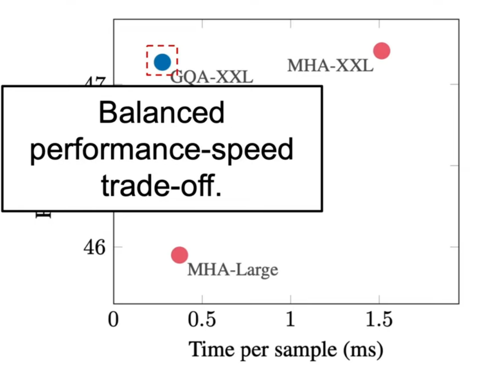

[TOC]
- Title: Recent Language Model Technique 2024
- Review Date: Thu, Apr 25, 2024
- url: https://www.youtube.com/watch?v=kzB23CoZG30
- url2: https://www.youtube.com/watch?v=iH-wmtxHunk
- url3: https://www.youtube.com/watch?v=o68RRGxAtDo
LLama 3

-
key modification: grouped query attention (GQA)
-
key instruction-tuning process:
- Their approach to post-training is a combination of supervised fine-tuning (SFT), rejection sampling, proximal policy optimization (PPO), and direct preference optimization (DPO).
- The quality of the prompts that are used in SFT and the preference rankings that are used in PPO and DPO has an outsized influence on the performance of aligned models.
-
fine-tuning tool: torchtune
Llama architecture
- RMSNorm pre-normalization: This is a normalization technique used in the model
- SwiGLU activation function: This is the activation function used in the model]
- Rotary Position Embedding (RoPE): Llama2 uses a new kind of positional embedding mechanism called Rotary Position Embedding (RoPE)
Extra: Sampling and Rejection Sampling
ref: https://www.youtube.com/watch?v=9ixzzPQWuAY (Inverse Transform Sampling)
ref: https://www.youtube.com/watch?v=OXDqjdVVePY (Accept-Reject Sampling)
Grouped Query Attention
- Purpose: save computational cost
- Predecessor architecture: Multi-Query Attention


Result
NorNet: Efficient High Order Spatial Interaction with Recursive Gated Convolution
ref: https://arxiv.org/abs/2207.14284


Check definition of depthwise convolution: https://www.youtube.com/watch?v=vVaRhZXovbw

Capability Forgetting (from GLM-4)
as a post-training step subsequent to SFT, the author also observed unexpected behaviour in the policy after the RLHF stage. The model shows a reduced capability in handling specific scenarios.
- reason
- this behavior could be attributed to the problem of difference among data distributions or the inability of the reward model in such nuanced details.
- solution
- to overcome, the author incorporate an extra supervised next token prediction loss as an additional regularization besides the KL divergence. (in PPO)
- this is intended to preserve the pre-existing abilities of the SFT model, by encouraging the model’s outputs to align with human preferences through RLHF and leveraging next-token prediction to capture more granular signals.
- the next token prediction with a small amount of human-annotated (prompt, response) pairs $\mathcal{D}_S$, which are specific to particular tasks and serve as supervised regularization (trying to shifting the data distribution back)
Direct Preference Optimization
can we just use Cross entropy instead of PPO?